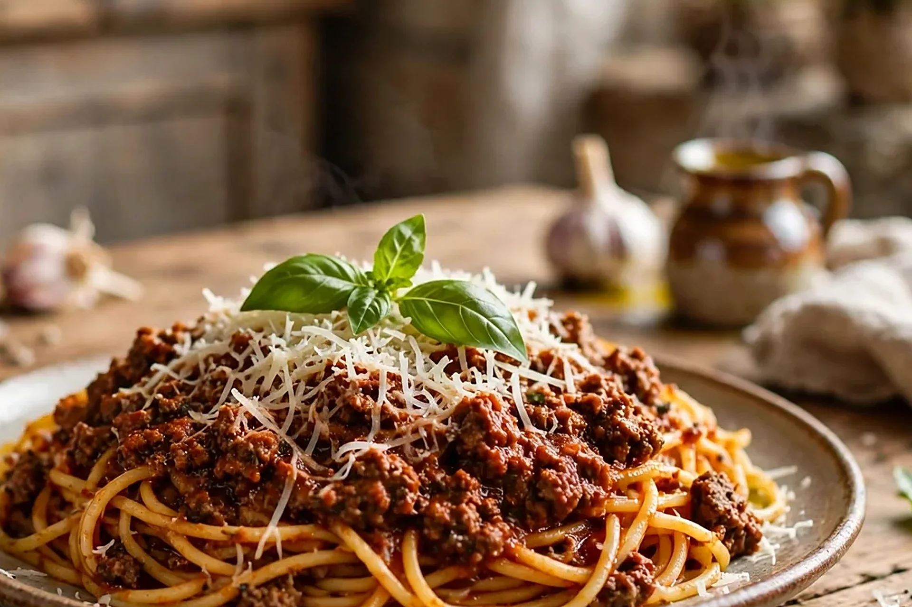

Spaghetti Bolognese (Spaghetti with Meat Sauce)
Spaghetti Bolognese is always a good idea in our house – on a weeknight or when the whole family is around the table. The sauce is allowed to simmer gently in its own time, and that is exactly what makes it so wonderfully rich.

Contents
Ingredients
Instructions
- Finely dice the onion, garlic, carrot and celery.
- Heat the olive oil in a large pot and brown the ground beef over high heat until crumbly.
- Add the vegetables and fry for about 5 minutes. Stir in the tomato paste and let it toast briefly.
- Pour in the chopped tomatoes and broth, stir in the oregano and season with salt and pepper.
- Simmer the sauce over low heat for about 30–35 minutes, uncovered, until nicely thick. Stir now and then.
- Cook the spaghetti in plenty of salted water according to the package directions until al dente, then drain, reserving some of the pasta water.
- Toss the spaghetti with the Bolognese – loosen with a splash of pasta water if needed – and serve sprinkled with Parmesan.

Tip
A splash of pasta water makes the sauce glossy and helps it cling to the spaghetti. Bolognese freezes well, so it is perfect for cooking ahead.
📌 Find more recipe ideas on our Pinterest profile:
Lecker Rezepte on Pinterest
Lecker Rezepte on Pinterest